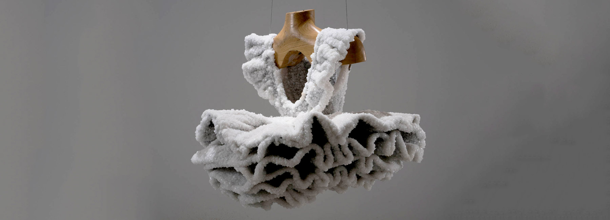

Izraelská umelkyňa Sigalit Landau vytvorila unikátne umelecké diela z bežných každodenných objektov. Ide o soľné sochy, ktoré ponorila pod hladinu Mŕtveho mora, a následne ich vylovila.
| Odkazy |
| DOMOV |
| SOĽNÉ SOCHY |
| SOĽNÁ BAŇA WIELICZKA |
| SOĽNÉ LAMPY |
Tieto objekty sa stali súčasťou jej kinhy s názvom Salta Years, ktorá sa venuje práve objektom, ktoré boli 15 rokov ponorené v slanom mori. Vďaka tomu získali neobyčajnú, soľnú krustu, ktorá im pridáva na dráme, zvýrazňuje prirodzené línie aj povahu objektu.
Umelkyňa počas tohto obdobia starostlivo monitorovala každý objekt a jeho vývoj pod hladinou.

zdroje:https://www.top-fashion.sk/lifestyle/dizajn/3448-solne-sochy